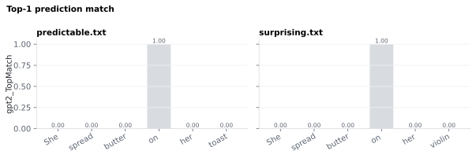

6.1.12Top-1 prediction match
Binary flag (0 or 1) indicating whether a selected model's most likely next word at this position matched the actual word in the transcript.
GPT-2 needs no credentials. The gated Llama-3 roster models need a HuggingFace token before they run — see LLM access & credentials.
6.1.12.1What it is
Binary flag (0 or 1) indicating whether a selected model's most
likely next word at this position matched the actual word in the
transcript:
<slug>_TopMatch(wᵢ) = 1 if argmaxⱼ P_model(j | w₁ … wᵢ₋₁) == subword(wᵢ)
0 otherwise
Comparison is made at the first subword of the spaCy token (model
subwords don't always align 1:1 with spaCy tokens). PUNCT rows are
NaN, and so is the document's first word — it has no preceding
context, so the model makes no prediction for it. Enabling Top-match
for several roster models writes one column per model, e.g.
gpt2_TopMatch and llama3_8b_TopMatch side by side.
6.1.12.2See it

6.1.12.3In your output
| token | gpt2_TopMatch |
|---|---|
| She | |
| spread | 0 |
| butter | 0 |
| on | 0 |
| her | 0 |
| violin | 0 |
| . |
6.1.12.4MATLAB
% Load the word-level table (one row per word)
T = readtable('word/surprising_features.csv', 'TextType', 'string');
T.Properties.VariableNames % every column in the file
head(T(:, {'token', 'gpt2_TopMatch'}), 10) % this feature's columns (first rows)
% Plot
w = T.upos ~= "PUNCT"; % words only
bar(T.gpt2_TopMatch(w)); xticks(1:nnz(w)); xticklabels(T.token(w)); ylabel('gpt2_TopMatch')
6.1.12.5In the code
Source: sensi/extractors/predictability.py:add_predictability (the
unified, roster-driven extractor; it replaced the old extractors/llm_cloze.py,
which was removed on 2026-07-11) and
_HuggingFaceBackend.score.
Computed in the same forward pass as <slug>_Cloze and
<slug>_Surprisal for a given model: per subword, the backend already
computes argmax(log_probs) over the vocabulary. For each spaCy
token, the flag is set by comparing the argmax at the token's first
subword position to the actual id at that position:
top_match = 1 if sub_top1[first_sub] == ids[first_sub] else 0
The comparison is done at the token's first subword, in vocabulary-id
space (argmax id vs. the actual next-token id) from the local model's
logits.
upos == "PUNCT" → NaN, and the document's first word is NaN too
(no preceding context, so no prediction to match). The output is stored
as int for 0 / 1 and remains NaN (a Nullable Int64 view in
pandas) for those rows.
6.1.12.6Library
See sensi/extractors/predictability.py:_HuggingFaceBackend.score. Every
backend — GPT-2 included, via AutoModelForCausalLM — emits
{"p": ..., "surprisal": ..., "top_match": 0|1} per spaCy token.
6.1.12.7EEG rationale
Whereas <slug>_Cloze and
<slug>_Surprisal are graded measures of
predictability, <slug>_TopMatch is a discrete prediction-correctness
flag. It's useful when:
- The downstream model wants a binary regressor — e.g. an "expected" vs "violation" contrast — without picking a probability threshold.
- You want to count strict-prediction hits across a stimulus (proportion of positions where the model nailed the next word).
- You're comparing against psycholinguistic experiments that operate on "predictable" vs "unpredictable" rather than continuous cloze.
For ERP-amplitude regressions, the graded
<slug>_Surprisal is the better default.
<slug>_TopMatch is binary by design, so it discards everything below the
top guess: every word the model did not rank first scores the same, yet N400
facilitation is graded even among unpredictable words Szewczyk 2022. No
paper we know of tests top-match against surprisal directly; this is a
recommendation, not a measured result.
6.1.12.8Papers
The exact "top-1 prediction match" framing is more common in NLP benchmarking than in EEG papers. The closest neuroscience precedent is work that links transformer next-word predictions to brain responses during natural listening:
-
Goldstein 2022 Goldstein et al. Shared computational principles for language processing in humans and deep language models. Nature Neuroscience 25(3), 369–380. doi:10.1038/s41593-022-01026-4 — ECoG study showing that humans and autoregressive transformer models share next-word prediction as a computational principle during natural language processing.
-
Szewczyk 2022 Szewczyk & Federmeier. Context-based facilitation of semantic access follows both logarithmic and linear functions of stimulus probability. Journal of Memory and Language 123, 104311. doi:10.1016/j.jml.2021.104311 — N400 facilitation "combines linear and logarithmic functions"; graded even among unpredictable words.